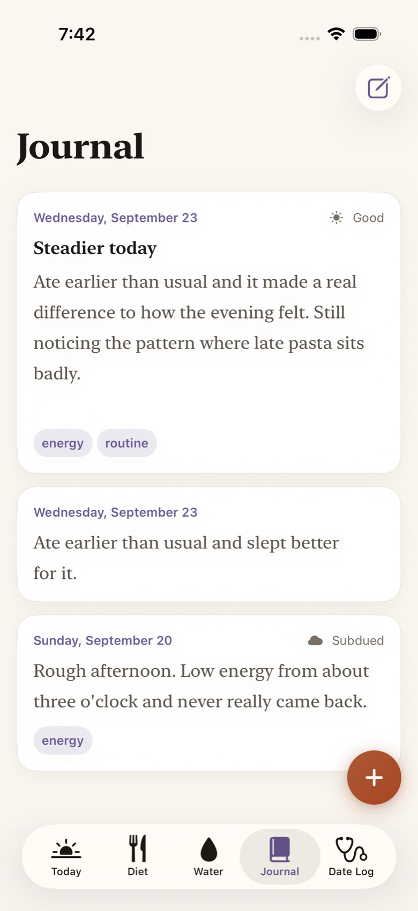
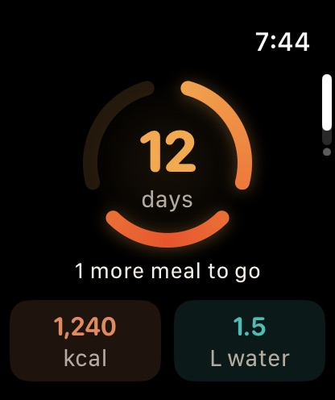
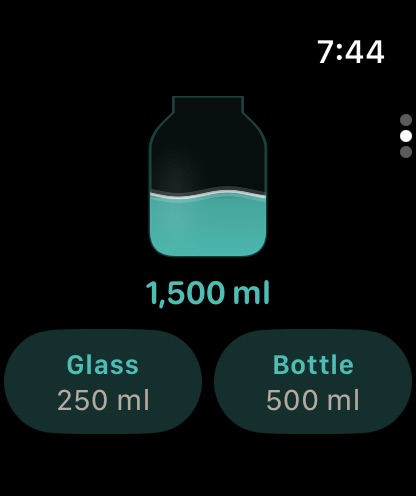
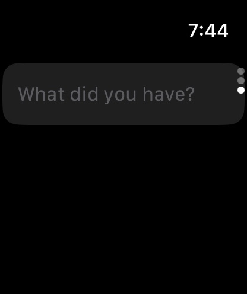

Diet Tracker
Type it, say it, photograph the plate or scan the barcode. 11,750 foods on the device, with real nutrition for each.
iPhone · iPad · Apple Watch
A food, water, journal and symptom diary. Say what you ate the way you’d say it out loud, note how you felt when it started, and Vessel lines the two up, on your phone and nowhere else.

Four logs, one timeline
How you felt is nearly useless on its own, and a food diary alone can’t tell you what disagrees with you. Put both on one clock and they start to answer each other.
Type it, say it, photograph the plate or scan the barcode. 11,750 foods on the device, with real nutrition for each.

One tap for a glass, a bottle or a large one. Only water goes here; coffee and milk count as food.

A few lines about the day and, if you like, a mood. Set in a serif because it’s for reading back.

Bloating, heartburn, headaches and fifteen more, each on a five-step scale that says what the steps mean.
A language model the size of a photo
Vessel carries its own small language model, built for this one job and small enough to run offline on a watch. It picks out what you ate, how much and when, then shows you what it read before anything is saved.
What the model read
Wherever you are when you remember
Siri goes through the same parser as the app, asks “which milk?” when the answer changes the numbers, and reads back anything it isn’t sure about before saving.



The day at a glance, water in one tap, and a meal said out loud and previewed on the wrist, even with your phone out of range.
A sidebar, several windows side by side, and a photo dragged onto the Diet log is read for the food in it.
Your data
Vessel has no account, no server of its own, and nothing that reports back. There is nobody on the other end to trust.
The full privacy policy is short, because there is little to say.
Get Vessel
Vessel 2.0 is finished and ready for review. It will be listed as soon as its developer account is in place. Until then it’s open source, and anyone with a Mac can build it and install it on their own iPhone for free.
Requires
iPhone or iPad on iOS 18 or later (fullest on iOS 26). Apple Watch on watchOS 11 or later.
# On a Mac with Xcode, your iPhone plugged in
/bin/bash -c "$(curl -fsSL https://raw.githubusercontent.com/shankar-sachin/vessel/main/scripts/install.sh)"One command: it downloads Vessel, signs it with your own free Apple ID and installs it. Step-by-step instructions are in the wiki.
Tested on real hardware